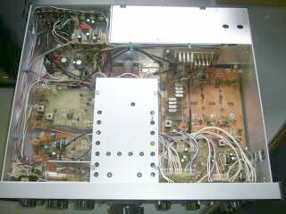
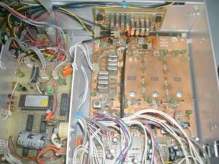
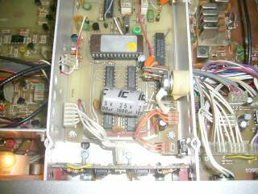
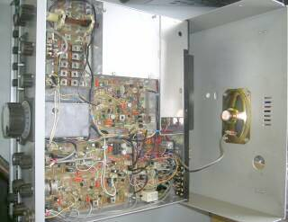
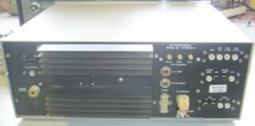

 |
アルミ・シャーシ／ケースに、ガラス・エポキシ基板と、素性は悪くありません（私の古いマシンに対する採用基準に合致！です）
ＰＴＯと称して高安定をうたった、５．０～５．５ＭＨｚ（＋４０ＫＨｚ）を発振するバリＬタイプのＶＦＯを内蔵しています
通電３０分後からは、２１℃から４３℃までの温度変化で、周波数変化は平均１５Ｈｚ以内、とあります
ＴＥＮ-ＴＥＣは、Ｃｏｌｌｉｎｓ同様可変ＬタイプのＶＦＯがお得意で、Ａｒｇｏｎａｕｔも同じ可変ＬタイプのＶＦＯが採用されています
しばらく様子をみて、必要があれば、またＸ－Ｌｏｃｋの世話になろうと思います（ＯＦＦ-ＳＥＴ機能を内蔵ですから、組み込みは楽そうです）
左写真は､本体トップ側を写したものです |
 |
クリスタル８つの固まり（４個ｘ２））が見えます・・・そうです８ポール・フィルタです
２組見えています
帯域幅２．４ＫＨｚの、中心周波数９ＭＨｚと６．３ＭＨｚのものです
カタログあるいは取説では、受信において帯域幅２．４ＫＨｚ １６ポール・フィルタを内蔵と書かれています（送信は、９ＭＨｚフィルタのみ使用）
基板上右のスペースは､オプション・フィルタの取り付け場所です
こちらは、受信用パス・バンド・チューニング基板で、中心周波数６．３ＭＨｚのフィルタが装着されるようになっており、オプション・フィルタとして、１．８ＫＨｚ ５００Ｈｚ ２５０Ｈｚ の帯域幅をもつものの用意があったようです
クリスタル・フィルタまで自前・・・ＴＥＮ-ＴＥＣらしさを感じます |
 |
ロジック・ボード／アップです
ＰＴＯ（ＶＦＯ）ユニットの上部に配置されています
シールド・ケースを外して写しています
この関係で問題に遭遇しました
全て正常にデジタル表示するまでにすごく時間がかかる、また突然ドット以外の表示が消えるケースにも遭遇しました
何かの事情で､デジタル表示に異常が生じた場合、２０～３０分以上電源を切って放置してからでないと、正常な表示が出来ません（正常な表示に戻りません）
回路図を追ってみると、どうもＣＰＵのＲＥＳＥＴピンに付いているコンデンサＣ６が怪しい・・・正常にＣＰＵリセットができていない可能性が高い！交換してみることにしましょう |
 |
こちらは、本体ボトム側です
内蔵スピーカーは、ご覧のように底面に取り付けられています
ＲＦ段は､シールド・ケースの中です
こちらからは、ＶＦＯユニットが見えます
|
 |
リア・パネルです
いろんな取り組みが出来るよう、信号の入出力端子が付いています
極めてアマチュア・ライクかと思います |
とりあえず、全体を清掃、接点・ＶＲの清掃などメカ中心のケアをして、通電して様子を見ているところです
まず先に記したように、ロジック・ボードＣＰＵのリセット動作に問題を見つけました
細かい動作点検はこれからですが、現役に供するようになるまでには、色々と楽しませてもらえそうです
ボツボツ時間を見つけて、つっついてみることにします |
| 2015.01 ＪＡ４ＦＵＱ |
| その後： |
| |
ディスプレイＣＰＵのリセットが怪しい件 |
|
|
予想が当たりました
Ｃ６コンデンサを交換することで、ディスプレイ問題は解消しました |
|
その他の機能チェック |
|
|
受信感度、送信出力などスペック通りで、何も問題はありませんでした
製造後、３０年程度経過していると思われるマシンですが、送受信という基本的な部分においては問題なく、メカ的な部分での劣化（接触不良・ガリ、ダイヤル減速装置のバック・ラッシュなど）と、先のロジック・ボード以外に電気的な問題は生じていませんでした
実際にアンテナをつないでみました
ＡＧＣの動作／Ｓメータの動きはちょっと面白い・・・いわゆるデジタル・ホールディング・イメージの動きをしますが、ＦＡＳＴで使用すれば違和感はありません（別に異常なわけではありません､こちらが慣れていないだけです！）
受信音ですが、いわゆる通信に都合が良いと言われる聞こえ方をするように、意図的にしてあるように感じます
Ｓ／Ｎは悪くありません､いえはっきり言って良いと思います
ＲＦ-ＡＴＴ状態（プリアンプOFF、ＤＢＭによるＴｏｐＭｉｘ／２ｎｄＭｉｘ、増幅はフィルタ・アンプのみで、いきなりＩＦ)で、十分な感度があります
ダイヤル・ノブ１回転で約１８ＫＨｚの高安定をうたっているＶＦＯですが、確かにドリフトは極めて少ないです
Ｘ－Ｌｏｃｋを組み込むかどうか迷うところです
と、まああっさり実用に供す形になってしまいました |
|
残すは音質（音色）でしょうか・・・聞こえ方、やはり好みというものがあります！
この年代の市販品は、High・Lowいずれも（特にLow側が）､必要以上にカットしてあるケースが多いです
また、本機の場合、通信に都合が良いように特化された聞こえ方／ある周波数範囲に押し込まれた、それもパック（レベルを圧縮）したようにも聞こえます
これを､通信を目的としたひとつの完成形と考えれば、この設計はそれで良いと思います
もし、素直な音色／聞こえ方を求めるとしたら、ＡＧＣ～検波、そしてオーディオ段まで見直す必要があるかも知れません
ＡＧＣは独特
一般に行われている増幅素子の利得調整ではなく､増幅途中の信号を３箇所でアッテネートする方式が採用されており、ＩＦ段より前にはＲＦプリアンプ（手動でＯＮ－ＯＦＦ）とフィルタ・アンプ以外、増幅要素はありませんので（全てＤＢＭ）、この処理はＩＦ内だけで行われています
ＤＢＭを上手く利用している（ダイナミック・レンジを大きく取る）、と言うことにつながるのかも知れません
プロダクト検波は､デュアル・ゲートＭＯＳ－ＦＥＴ
ＤＢＭ-ＩＣによるプロダクト検波と、ＡＦ段間カップリング・コンデンサの容量アップくらいは、どこかで試してみようと思います |
| |
| その後Ⅱ |
少し気になっていた２点について、手を出してみました(2015.03)
■ＡＧＣレリーズタイムの変更
ＳＳＢ受信であってもＦａｓｔを選択せざるを得ないようなレリーズタイムが長い状況がありましたので、抵抗を調整しました
■プロダクト検波の変更
オリジナルは、デュアル・ゲートＭＯＳ－ＦＥＴによるものです
オーディオ・フィルタ満載の本機では、検波回路を変更してもそうそう音色に変化はないかな、と言う思いもありましたが、いつもの？ＳＮ１６９１３Ｐを使ったものを組み入れてみました
オリジナルの配線はそのままで、つなぎ替えるイメージで組み込みました（完全なバラック配線！）
蛇の目基板で、段間のカップリング・コンデンサなどはオリジナルどおりです
出力レベルも大きく変わらず、従ってＡＧＣ（オーディオ型）動作にも大きな影響はないように思えます
結果は、なかなか良い感じ・・・もともとノイズレベルが低い受信状況であったのですが、低域もオリジナル以上に再生され、ますます落ち着いた聞こえ方をします
検波段でのＳ／Ｎも向上したように思われます
ＡＧＣをＯＦＦにしたときの聞こえ方は、オリジナルのいかにもＡＧＣを切ったというハードな聞こえ方とは異なり、それなりに聞ける音がします（検波回路のダイナミックレンジの違いか）
どなたの電波を聞いても同じように聞こえる音色が、個々の違いがそれなりに分かる音色に変わりました
これで、音質の変化についてレポートを・・・とのリクエストにも、ある程度はお応えできそうですＨｉ(段間のＣ容量を増やせば、もう少し低域は出そう）
同時に、僅かではありますがＶＦＯのドリフトが少し気になるようになりました
アナログＶＦＯとしては、「売り」どおり非常に安定なＶＦＯなのですが、ここでまたＸ－Ｌｏｃｋの世話になるかどうか悩みが増えることになってしまいました（オリジナルの検波回路では、ここまで気にならなかったことなのですが・・・、色々バランスがあることを、改めて実感） |
通常、プリアンプＯＦＦ（ＡＴＴ表示ＬＥＤ点灯しますが、感度に不足は感じません）での受信で、ノイズがあまり気にならない（使用場所がイナカ！、市街地ノイズの影響を受けることの少ないところでの使用）、落ち着いた気分で受信が出来る点では、捨てがたいトランシーバとなりました
メインのＩＣ－７５６ＰＲＯⅢと比べ、バンドチェックは圧倒的に早く可能で(ダイヤルを回す回数が少なくて済む！）、ノイズレベルも低く、ちょっとバンドチェック／Ｗａｔｃｈするには、都合の良いマシンです
経年変化と思われるＶＦＯダイヤルのバックラッシュが少しある点と、僅かなＶＦＯのドリフトが時に気になる点が、残された改善テーマでしょうか！？ |
| 2015.03 |
|